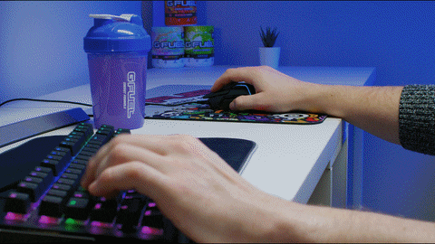

Programming
Coding is something that makes a difference. When you code, you get this feeling that you are helping people.
Through code you can create something that people interact with, use, touch and work with. When you manage to
build something that solves problems, you know that you are making a difference in someone else's life. That is an
amazing feeling.

Gaming
Gaming is something that makes us feel happy and provides us an escape from reality, especially when times are
heard it is very helpful to play games as it relaxes me and keeps me from getting anxiety.

Football
Football is somethign I have loved since my childhood. I love to play football which is why many household items
at my house got broken which angered my Mum a lot. but recently due to busy lifestyle I have not been able to give
too much time to this psort. but I ahv ebeen following the World Cup recently which is one of the most awaited
moments in t he life of a football fan,